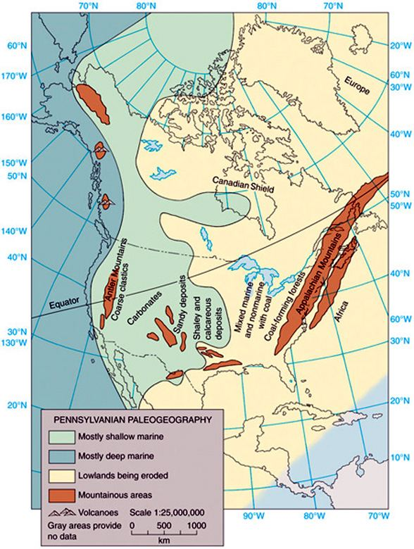
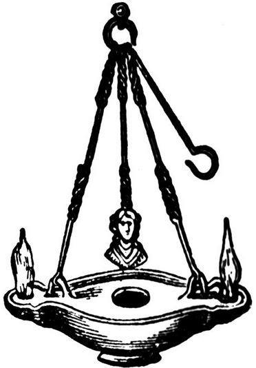
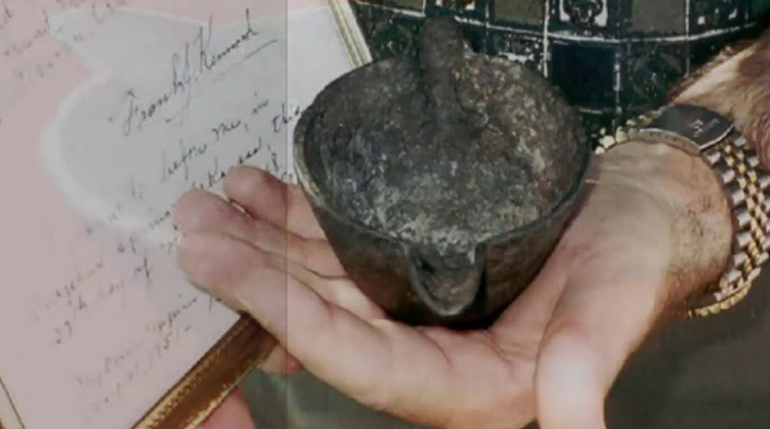
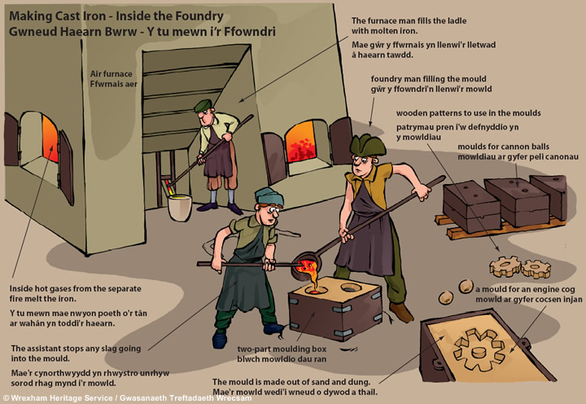
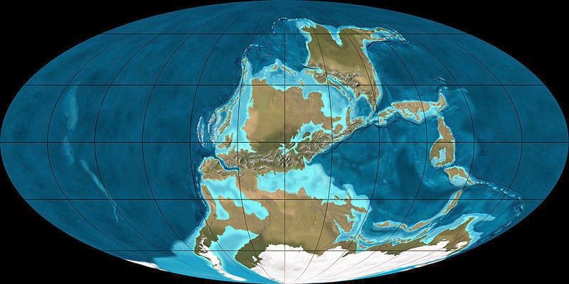
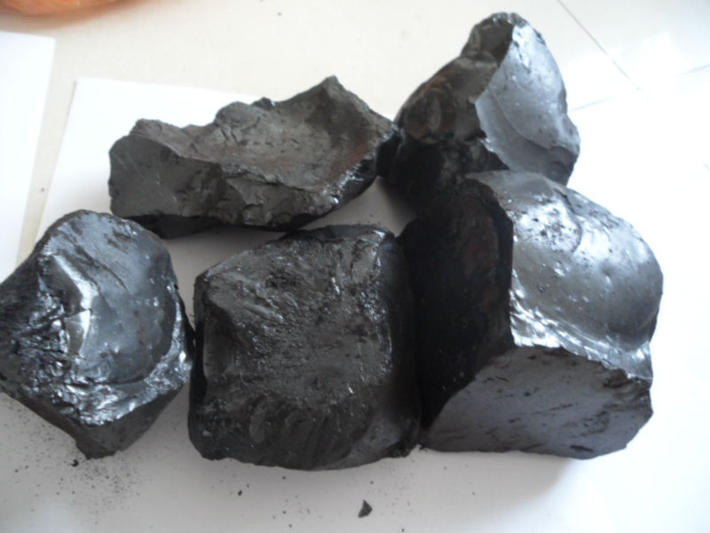
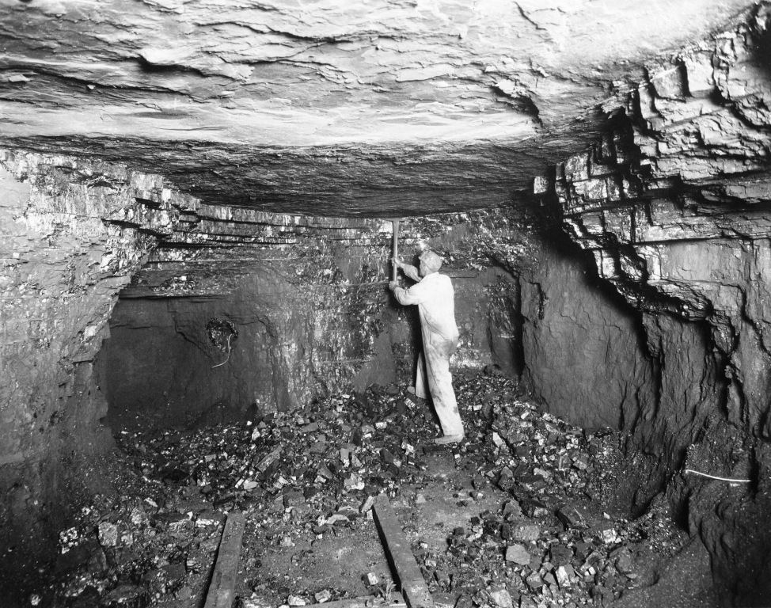

Our world is filled with all sorts of mysteries. For the ignorant, they are mere curiosities. However, for those who have a better understanding of how the universe works, they serve as signposts towards the make up of the true reality that we live within.
Let’s take a look at a an OOPART; and Out Of Place ARTifact. In this case, let’s look at how a cast oil lamp found it’s way into a block of coal. Coal, mind you that formed a long… long… long time ago.
Let’s look at the function of the object, let’s study the processes used to make the object, and let’s try to understand the time when the coal was formed. For by understanding these characteristics, we can better understand the item in question, and thus in the process, understand our reality as well.
Introduction
Wilbert H. Rusch published an account in The Creation Research Society Quarterly 7, 1971 of a rough, cast iron pot that was found in a chunk of coal. The coal came from a mid-Pennsylvanian coal seam. The coal seam was located at the Municipal Electric Plant in Sulphur City, OK.
The artifact is now archived at Creation Evidence Museum.
This small implement was embedded inside a single large lump of coal. While other coal artifacts have been found, very few have been well documented or analyzed. As most of the time, a typical and average person discovers the item once they crack open the coal to heat their homes. Typically the item is discarded and forgotten. I, myself, have found screws, nails, small metal objects and such inside of coal when I worked in the coal mines, and was involved in sorting debris out from under the rock crusher there.
In this case, there is a notarized letter documenting the authenticity of the find.
The document states the following:
Sulfur Springs Arkansas Nov. 27 – 1948 While I was working in the Municipal Electric Plant in Thomas, Okla. in 1912, I came upon a solid chuck of coal which was too large to use. I broke it with a sledge hammer. This iron pot fell from the center, leaving the impression, or mould of the pot in a piece of the coal. Jim Stull (an employee of the company) witnessed the breaking of the coal, and saw the pot fall out. I traced the source of the coal and found that it came from Wilburton, Okahoma Mines. Frank J. Kennord Sworn to before me, in Sulphru [sic] Springs, Arkansas, this 27th day of November, 1948 Julia L. Eldred N.P. My commission expires May 21, 1951 – Benton Co.
Other Curiosities
Working in the coal mines, we all knew that these objects would appear from time to time. I myself have found rods, screws, nails, twisted and bent mental pieces. In additions there would be rust nodules in the shape of long pipes, rods, and clumps of unknown objects that would rest near the coal in the adjacent rock, typically limestone or sandstone in type and appearance.
A handful of other such artifact-in-coal accounts have been recorded (Sanderson, Ivan T., Uninvited Visitors, 1967, pp. 195-196.), including an intricate gold chain found in coal. The Morrisonville, Illinois Times, on June 11, 1891, published a report that Mrs. S. W. Culp found a circular shaped, eight-carat gold chain, about 10 inches long, embedded in a lump of coal after she broke it apart to put in her scuttle. The chain was described as “antique” and of “quaint workmanship.” The story said only part of the chain was revealed when she first broke open the coal, and that the rest of the chain remained buried within the coal. The coal came from one of the southern Illinois mines. Unfortunately the artifact has since disappeared.
Dating of the coal
The coal is from a coal seam that has been positively dated to the Carboniferous Period, of which case, the particular seam was dated to the Pennsylvanian Sub-Period. This is positively dated to 299.0 to 318.1 million years ago.
For our purposes, let’s just say it comes from 300 million years ago.
For those of you who are unaware, this was a very, very long time ago. It was not only long… long… before humans were out and about, it was before hardwoods. At that time, the earliest trees were at best softwoods, while the bulk of the trees looked more like overgrown ferns and bamboo strands.
The earliest trees were tree ferns, horsetails and lycophytes, which grew in forests in the Carboniferous period. The first tree may have been Wattieza, fossils of which have been found in New York State in 2007 dating back to the Middle Devonian (about 385 million years ago). Prior to this discovery, Archaeopteris was the earliest known tree. Both of these reproduced by spores rather than seeds and are considered to be links between ferns and the gymnosperms which evolved in the Triassic period. The gymnosperms include conifers, cycads, gnetales and ginkgos and these may have appeared as a result of a whole genome duplication event which took place about 319 million years ago. -Wikipedia
This period of time was that of a calm water world. There was a large continent Gondwana which was mostly covered in glaciers on the Southern hemisphere. The equator was a hot, steamy lush area filled with all kinds of early plant life.

What the Earth was like at the time
The earth was mostly a water wold. There was one singular landmass known as Gondwana. The land was mostly arid, and dry. At the Northern and Southern climates it was cold, and there was a nice lush band of tropical climate at the equator. Any (land based) life worth noting was at the equator.
We do know that the region was not only tropical, and warm with lush and extensive primitive flora, it was also an area of wet-lands, bogs, swamps and low-shallow seas. The terrain, now called Oklahoma, was a tropical coastal area. There were many low lying areas, and it probably looked something a little like the swamps of Louisiana, or the low lands of Florida.

Function of the Object
The object is a lamp. Typically these lamps either sits on a table, or hangs from a chain on a stand. Oil, is placed inside the lamp, and a small fire is lit at the edges that look like tea spouts.

We rarely see this kind of lamp today. It is of a style and utility that is long obsolete. This kind of lamp was very popular in the ancient world. Both the Romans, and the Egyptians used these lamps and they are commonly depicted in carvings and reliefs from that time.
Manufacture of the Object

This object is made out of iron. Notice that it is not corroding or rusting. Conventionally, this is known as “white iron”.
The basic strength and hardness of all iron alloys is provided by the metallic structures containing a crystalline allotropic form of carbon. Almost all irons have some graphite inside of it. The carbon graphite gives the iron the properties that we so know and love about steel.
By controlling the type of carbon, and how it is added, one can significantly improve and enhance the properties of the metal. It can range from those of soft, low-carbon steel (18 ksi/124 MPa) to those of hardened, high-carbon steel (230 ksi/1,586 MPa). Indeed, the modulus of elasticity varies with the class of iron, the shape of the cast part (sphericity) and volume fraction of carbon inside of it. All of which is a knowledge base that helped to greatly expand the steel industry in Pittsburgh and the Ohio valley.
Other minerals can be added to iron to add other properties as well…
"Huge amounts of iron are used to make steel, an alloy of iron and carbon. Steel typically contains between 0.3% and 1.5% carbon, depending on the desired characteristics. The addition of other elements can give steel other useful properties. Small amounts of chromium improves durability and prevents rust (stainless steel); nickel increases durability and resistance to heat and acids; manganese increases strength and resistance to wear; molybdenum increases strength and resistance to heat; tungsten retains hardness at high temperatures; and vanadium increases strength and springiness. Steel is used to make paper clips, skyscrapers and everything in between." -It's elemental (Iron)
Iron typically will not corrode, that is, until you add carbon…then it starts to rust. So that is why Stainless Steels were such a big thing back in the day. It was a method by which carbon could be added to the steel, to make it hard, and a process put in place to reduce corrosion.

From what I can gather from the photos, this looks like an object made out of “pure” cast iron. With only some trace amounts of impurities that would give it a “white” iron composition. Though, the reader should be aware that this speculation on my part. In short, it is a cast object made out of iron.
A mold was made.
Iron ore was smelted and iron was extracted from the rock. It was then heated until it was liquid and then poured into the mold. This is “Iron Age” technology. Which, by extension, means that whatever civilization made this object passed through the copper, and bronze ages of technology.
Form and Shape
One thing that I noticed about this object is how well formed it is. The top and the bottom are both apparently well-formed circles. The spouts are also well formed and well done. The person who made this object was an expert. Not only in skill, but also had an “eye” for Industrial Design and utility.
The design for the object is “clean”. It is unadorned and simple. It is “no nonsense” and is quite unlike that of most historical objects.
This object was designed for in paper first and then a mold was created. The precision and lines are completely suggestive of pre-planning and not that of a hand-made model that was used to make a mold cavity.
Speculations and Considerations
What can we learn from this object? Here are my thoughts…
- There was a “Iron Age” civilization at the equator 300 million years ago.
- They utilized lamps. We know that both the ancient Egyptians and Romans used similar style lamps inside their domiciles.
- The design of the lamp shows a level of expertise that is suggestive of a large complex civilization.
- The civilization that created this object was not human. What ever they were, and what form or shape they had, is unknown. Humans did not come into being for over 299 million years later.

Opinions of the Statists
Statists typically believe in a Newtonian reality. It is one where time is a strict linear path, and that everything that exists can be observed and measured by man.
It’s a rather bleak existence. As we know from quantum physics that that is absolutely NOT the way the universe works. I guess that they never got the memo.
They also believe in the inherent superiority of humans over all creatures. They believe that there is only one intelligent species; human. They also believe that the government can be trusted; that they would tell everyone immediately is there were extraterrestrials, or if they had treaties with other kinds of beings or creatures.
Statists are proud of their ignorance.
Personally, I find their knowledge of reality trivial. their understanding of the universe wholly inadequate, and their understanding of the nature of man, impossibly tiny. They are like the book-worm misfit who has no social life and locks themselves inside a room alone to construct a reality from which they can find solace within.
Anyways, they have come to certain conclusions on this particular object…
"The cup appears to be cast iron, and cast iron technology began in the eighteenth century. Its design is much like pots used to hold molten metals and may have been used by a tinsmith, tinker, or person casting bullets... The cup was likely dropped by a worker either inside a coal mine or in a mine's surface workings. Mineralization is common in the coal and surrounding debris of coal mines because rainwater reacts with the newly exposed minerals and produces highly mineralized solutions. Coal, sediments, and rocks are commonly cemented together in just a few years. It could easily appear that a pot cemented in such a concretion could appear superficially as if it were encased in the original coal. Or small pieces of coal, including powder, could have been recompressed around the cup by weight (Isaac, 2005). Thus, a person who broke open such a nodule might mistakenly conclude that it was part of the host formation, rather than a secondary product of the mining environment. This phenomena has been documented with objects as modern as soda bottles and World War II artifacts (Al-Aga, 1995; McKusick and Shinn, 1980), and thus cannot be used as anti-evolutionary evidence. One might object that we do not know that this was the case in regards to the iron pot in question. True, but more importantly, we don't know that it wasn't. In short, even if the workers were telling the truth as far as they knew it, we have no reliable evidence that the pot was actually part of the original coal formation. -Alleged Iron Pot in Coal
Yup. You read that correctly. Since there weren’t any “experts” or “blue ribbon panels” under the fucking mountain when the object was extracted, that it should be automatically discounted. Yup. That’s what the conclusion is; the deplorable non-college educated coal workers are either lying or confused.
It just HAS to be that, otherwise the nice organized history of the world will come tumbling down. And that is all the time that I will devote to the statists on this subject.
I think perhaps the biggest problem with these statists is that they absolutely have no idea what they are talking about. They have never seen a chunk or coal, picked one up, tried smashing it with a sledge. They seem to have the idea that coal is somewhat like a clump of clay…
Coal
Coal is a rock. Yes, boys and girls, it is a rock. Things don’t migrate into rocks like they might migrate into clays. For you can have things underground that would, over time, displace and find themselves inside chunks of clay. Not so with coal. Migration only occurs when the coal is not yet formed and it is in a still malleable state.

If something is inside a block of coal, you can be assured that once broken, the coal will have two (or more) mold halves, from which the object was readily apparent.
Coal is mined in seams. Often it is found in a thin layer between other rocks such as sandstone, limestone or maybe even granite. You see, geologic pressure turns loose sand, rock and gravels into hard stone over the years. To consider that somehow a pot accidentally found it’s way into a coal seam is stunningly ridiculous. Surrounded by miles of rock, how in the Lord’s name is it supposed to get there?

Of course, the statists have their ideas. Maybe the thing is a hoax. Or, perhaps maybe there was a tunnel in the coal seam, and the lamp was left by a previous miner… Though no thought is given to why anyone would want to use 4000 year old technology to dig deep into a coal seam, or that how the contemporaneous miners would somehow overlook an existing mine shaft.
Instead of trying all kinds of convoluted excuses to fit the statist narrative, why not call it was it is and then move on with your life? Jeeze!
Take aways
- A cast iron object that is apparently an oil lamp was found in a lump of coal.
- The coal was dated to 300 million years ago.
- It was manufactured.
- It was designed and intended for use.
- Since there is no evidence that humans existed 300 million years ago, the object had to have been made by non-humans.
FAQ
Q: What is the purpose of the object found inside the block of coal?
A: It is similar to a primitive oil lamp. Oil would be placed inside of the object, a lid would be placed on top, and the holes above the spouts lit to form a lamp.
Q: Why hasn’t there been other artifacts found around the lamp?
A: We do not know. There probably has been other objects, but most were probably burned within furnaces and ovens and not even noticed by those who shoveled and handled the coal. I would suggest that the coal seam might be laden with various artifacts that might serve as a nice window into the past.
Q: What do the Statists think the object is?
A: They think that somehow, somebody was using a ancient oil lamp design contemporaneously. That they somehow dug a hole inside a seam of coal, and left the object there. Later on, maybe a few months later, some coal miners dug some coal out.
The people who discovered the object inside the coal were too ignorant to see that it was an impossible item. In their ignorance, they mistakenly believed that it was formed when the coal was formed.
Obviously anything that does not fit the contemporaneous theories that are in vogue should be ignored until an official explanation is assembled from a “Blue Panel” committee of learned scientists and government officials.
Posts Regarding Life and Contentment
Here are some other similar posts on this venue. If you enjoyed this post, you might like these posts as well. These posts tend to discuss growing up in America. Often, I like to compare my life in America with the society within communist China. As there are some really stark differences between the two.


More Posts about Life
I have broken apart some other posts. They can best be classified about ones actions as they contribute to happiness and life. They are a little different, in subtle ways.


Stories that Inspired Me
Here are reprints in full text of stories that inspired me, but that are nearly impossible to find in China. I place them here as sort of a personal library that I can use for inspiration. The reader is welcome to come and enjoy a read or two as well.


MAJestic Related Posts – Training
These are posts and articles that revolve around how I was recruited for MAJestic and my training. Also discussed is the nature of secret programs. I really do not know why the organization was kept so secret. It really wasn’t because of any kind of military concern, and the technologies were way too involved for any kind of information transfer. The only conclusion that I can come to is that we were obligated to maintain secrecy at the behalf of our extraterrestrial benefactors.


MAJestic Related Posts – Our Universe
These particular posts are concerned about the universe that we are all part of. Being entangled as I was, and involved in the crazy things that I was, I was given some insight. This insight wasn’t anything super special. Rather it offered me perception along with advantage. Here, I try to impart some of that knowledge through discussion.
Enjoy.


MAJestic Related Posts – World-Line Travel
These posts are related to “reality slides”. Other more common terms are “world-line travel”, or the MWI. What people fail to grasp is that when a person has the ability to slide into a different reality (pass into a different world-line), they are able to “touch” Heaven to some extent. Here are posts that cover this topic.


John Titor Related Posts
Another person, collectively known by the identity of “John Titor” claimed to utilize world-line (MWI egress) travel to collect artifacts from the past. He is an interesting subject to discuss. Here we have multiple posts in this regard.
They are;